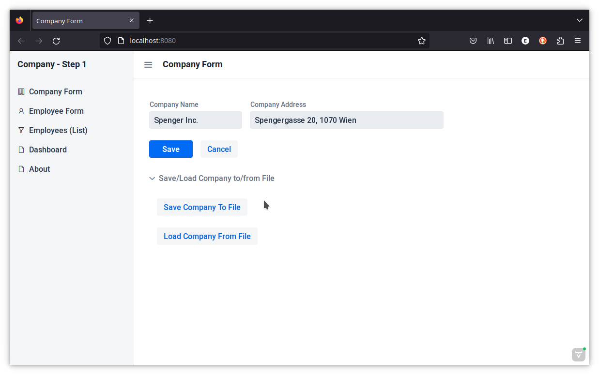
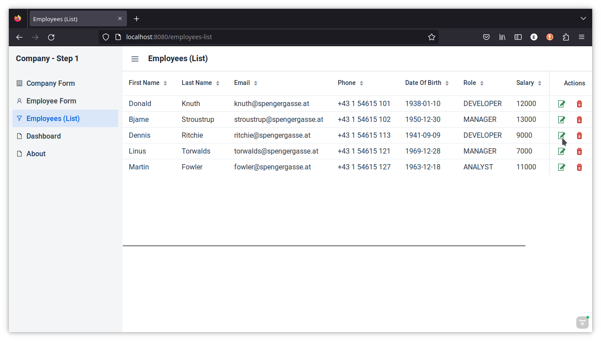
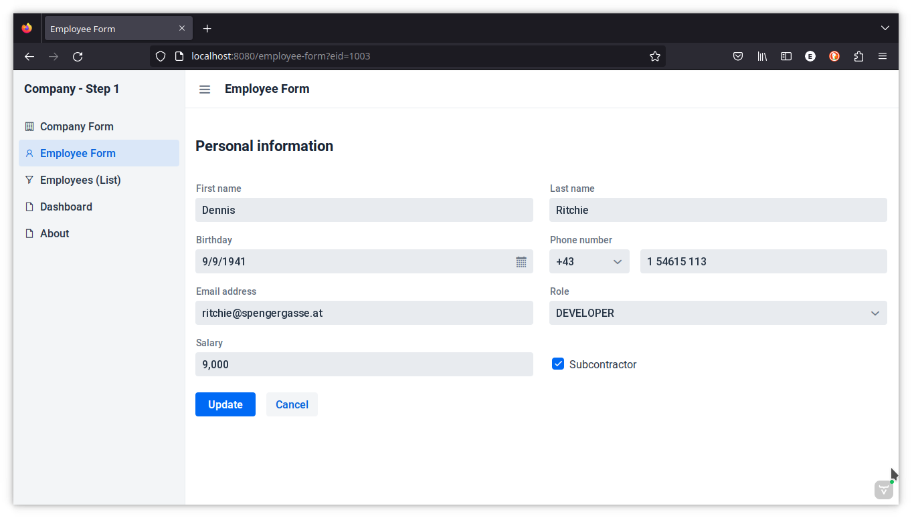

Lektion 4.5 — Teil 4: Webanwendungen mit Vaadin
Mitarbeiterverwaltung
Lernziele
- eine vollständige Webanwendung aus mehreren Views, Model-Klassen und Hilfsklassen aufbauenAbschnitt 1
- wiederkehrende Oberflächenelemente (Bestätigung, Fehlermeldung) in einer Hilfsklasse bündelnAbschnitt 4
- Exceptions des Models in der Oberfläche fangen und verständlich anzeigen, inklusive UrsachenketteAbschnitt 4
- mit
CustomFieldeine eigene, bindbare Komponente erstellenAbschnitt 3 - Neuanlage (INSERT) und Änderung (UPDATE) in einem Formular unterscheidenAbschnitt 2
- Dateien im Browser hochladen und am Server einlesenProjektschritt
1 — Die fertige Anwendung
In diesem Codebeispiel entsteht eine vollständige Webanwendung mit den Model-Klassen Company und
Employee. Im Company-Form lassen sich Firmenname und Adresse ändern; alle Daten können in eine
Textdatei gespeichert oder aus ihr gelesen werden.

Unter Employees zeigt eine Tabelle alle Mitarbeiter. Der rote Mistkübel löscht den Mitarbeiter, der grüne Stift navigiert zur Detailansicht.

In der Detailansicht (Employee-Form) werden die Attribute komfortabel bearbeitet; die Buttons speichern oder verwerfen die Änderungen.

| Klasse | Aufgabe |
|---|---|
views.MainLayout | Rahmen; im Menü kommen die neuen Views dazu (createNavItem) |
views.company.CompanyView | Firmendaten mit Binder; Speichern in/Laden aus company.csv |
views.company.EmployeesListView | Grid mit Bearbeiten/Löschen |
views.company.EmployeeView | Formular mit HasUrlParameter<Long> |
views.company.PhoneNumberField | eigene Komponente für Telefonnummern |
util.UIFactory | Dialoge und Benachrichtigungen |
Um die Views ins Template einzuhängen, sind nur geringe Änderungen in MainLayout nötig:
private Component createNavigation() {
VerticalLayout nav = new VerticalLayout();
nav.setSpacing(false);
nav.add( // Hinzufügen der Views
createNavItem("Company", CompanyView.class, VaadinIcon.BUILDING),
createNavItem("Employees", EmployeesListView.class, VaadinIcon.TABLE),
createNavItem("New Employee", EmployeeView.class, VaadinIcon.USER),
createNavItem("About", AboutView.class, VaadinIcon.FILE)
);
return nav;
}2 — Das Mitarbeiterformular
Die zentrale View ist das Formular für einen Mitarbeiter. Bei größeren Views hilft es, den Code in Abschnitte zu gliedern. So kann ein ausführliches Mitarbeiterformular aussehen (die Fassung im Projektschritt unten ist etwas kürzer, macht aber dasselbe):
EmployeeView.java (ausführliche Variante) Code anzeigen (142 Zeilen)
@PageTitle("Employee")
@Route(value = "employee", layout = MainLayout.class)
@Uses(Icon.class)
public class EmployeeView extends VerticalLayout implements HasUrlParameter<Long> {
// -- UI-Components ------------------------------------------------------------
private TextField firstName = new TextField("First name");
private TextField lastName = new TextField("Last name");
private EmailField email = new EmailField("Email address");
private PhoneNumberField phone = new PhoneNumberField("Phone number"); // (1)
private DatePicker dateOfBirth = new DatePicker("Birthday");
private ComboBox<Employee.Role> role = new ComboBox<>("Role");
private IntegerField salary = new IntegerField("Salary");
private Checkbox subcontractor = new Checkbox("Subcontractor");
private Button cancel = new Button("Cancel");
private Button save = new Button("Save");
// -- Model-Class ------------------------------------------------------------
private Employee employee;
// -- Binder -----------------------------------------------------------------
private Binder<Employee> binder = new Binder<>( Employee.class );
// -- CONSTRUCTOR ------------------------------------------------------------
public EmployeeView() {
init();
}
// -- PARAMETER HANDLING ----------------------------------------------------
@Override
public void setParameter(BeforeEvent event, @OptionalParameter Long eId) {
if (eId == null) { // ohne Id: neuer Mitarbeiter
readBean(new Employee());
return;
}
readBean(loadOrCreateEmployee(eId));
}
private Employee loadOrCreateEmployee(Long eId) {
try {
return Company.getInstance().getEmployee(eId);
} catch (NumberFormatException e) {
UIFactory.error("Fehler beim Lesen der Id", e);
} catch (CompanyException e) {
UIFactory.error("Fehler beim Laden des Mitarbeiters", e);
}
return new Employee();
}
private void init() {
initUI();
initActions();
readBean( new Employee() );
}
// -- BOOTSTRAP --------------------------------------------------------------
private void readBean(Employee employee) {
if (employee.getId() == null) {
save.setText("Hire Employee");
} else {
save.setText("Update");
}
this.employee = employee;
binder.bindInstanceFields(this);
// read from employee
binder.readBean( this.employee );
}
private void initUI() {
addClassName("employee-form-view");
setSizeFull();
add(createTitle());
add(createFormLayout());
add(createButtonLayout());
role.setItems(Employee.Role.values());
}
private void initActions() {
cancel.addClickListener(e -> onCancel());
save.addClickListener(e -> onSave());
}
private Component createTitle() {
return new H3("Personal information");
}
private Component createFormLayout() {
FormLayout formLayout = new FormLayout();
email.setErrorMessage("Please enter a valid email address");
formLayout.add(firstName, lastName, dateOfBirth, phone, email, role,
salary, subcontractor);
return formLayout;
}
private Component createButtonLayout() {
HorizontalLayout buttonLayout = new HorizontalLayout();
buttonLayout.addClassName("button-layout");
save.addThemeVariants(ButtonVariant.LUMO_PRIMARY);
buttonLayout.add(save);
buttonLayout.add(cancel);
return buttonLayout;
}
// -- ACTIONS ------------------------------------------------------------------
private void onCancel() {
UIFactory.showConfirm(
"Discard changes?",
"Are you sure you want to discard potential changes in this object?",
e -> getUI().ifPresent(ui -> ui.navigate(EmployeesListView.class))
);
}
private void onSave() {
try {
// write to employee
binder.writeBean(employee);
if (employee.getId() == null) {
// INSERT
Company.getInstance().hire(employee);
Notification.show("Employee " + employee.getLastName() + " saved successfully.");
} else {
// UPDATE
Notification.show("Employee " + employee.getLastName() + " saved successfully.");
}
// Init form
readBean(new Employee());
} catch (ValidationException e) {
UIFactory.error("Validation error", e);
} catch (Exception e) {
UIFactory.error("Unexpected error", e);
}
}
}- (1) Mit Vererbung wird eine eigene Komponente für Telefonnummern samt Vorwahl erstellt (Abschnitt 3).
- Der Code ist in Abschnitte gegliedert (Komponenten, Model, Binder, Parameter, Aufbau, Aktionen) – bei großen Views erleichtert das die Orientierung.
- INSERT oder UPDATE: Ein neuer
Employeehat noch keine Id; nur er wird mithireeingestellt. Ein bestehender wurde durchwriteBeanbereits direkt geändert. - Abbrechen fragt mit einem Bestätigungsdialog nach und navigiert dann zur Liste.
3 — Eine eigene Komponente: PhoneNumberField
package at.spengergasse.company.views.company;
import com.vaadin.flow.component.combobox.ComboBox;
import com.vaadin.flow.component.customfield.CustomField;
import com.vaadin.flow.component.orderedlayout.HorizontalLayout;
import com.vaadin.flow.component.textfield.TextField;
/**
* Eigene Komponente (Vererbung!): Vorwahl + Nummer, nach außen ein String
* wie "+43 15461501". Kann wie ein TextField an "phone" gebunden werden.
*/
public class PhoneNumberField extends CustomField<String> {
private final ComboBox<String> countryCode = new ComboBox<>();
private final TextField number = new TextField();
public PhoneNumberField(String label) {
setLabel(label);
countryCode.setWidth("120px");
countryCode.setPlaceholder("Country");
countryCode.setAllowedCharPattern("[\\+\\d]");
countryCode.setItems("+43", "+49", "+41", "+91", "+62", "+98", "+964",
"+353", "+44", "+972", "+39", "+225");
countryCode.addCustomValueSetListener(e -> countryCode.setValue(e.getDetail()));
number.setAllowedCharPattern("[\\d ]");
HorizontalLayout layout = new HorizontalLayout(countryCode, number);
layout.setFlexGrow(1.0, number);
add(layout);
}
// Komponenten -> Wert
@Override
protected String generateModelValue() {
if (countryCode.getValue() == null || number.getValue() == null) {
return "";
}
return countryCode.getValue() + " " + number.getValue();
}
// Wert -> Komponenten
@Override
protected void setPresentationValue(String phoneNumber) {
String[] parts = phoneNumber != null ? phoneNumber.split(" ", 2) : new String[0];
if (parts.length == 1) {
countryCode.clear();
number.setValue(parts[0]);
} else if (parts.length == 2) {
countryCode.setValue(parts[0]);
number.setValue(parts[1]);
} else {
countryCode.clear();
number.clear();
}
}
}
CustomField<String> ist eine abstrakte Basisklasse für Felder, die nach außen einen Wert (hier einen
String) haben, intern aber aus mehreren Komponenten bestehen. Zwei Methoden müssen überschrieben werden:
generateModelValue() setzt aus Vorwahl und Nummer den Wert zusammen, setPresentationValue
zerlegt einen Wert wieder auf die Komponenten. Weil das Feld phone heißt und einen String
liefert, bindet der Binder es automatisch an Employee.getPhone()/setPhone().
4 — Mitarbeiterliste und UIFactory
private void delete(Employee employee) {
try {
Company.getInstance().fire(employee);
refreshGrid();
Notification.show("Employee" + employee + " removed from the company!");
} catch (CompanyException e) {
Notification.show("Error: " + e.getMessage());
}
}
private void edit(Employee employee) {
getUI().ifPresent(ui -> ui.navigate(EmployeeView.class, employee.getId()));
}
private void refreshGrid() {
grid.setItems(Company.getInstance().getStaff());
}
Die Spalten des Grids werden über die Eigenschaftsnamen angelegt, die Aktionsspalte mit
addComponentColumn (wie in Lektion 4.4). Die Klasse UIFactory bietet wiederkehrende Aspekte
wie Dialoge und Benachrichtigungen an:
src/main/java/at/spengergasse/company/util/UIFactory.java Code anzeigen (68 Zeilen)
package at.spengergasse.company.util;
import com.vaadin.flow.component.ComponentEventListener;
import com.vaadin.flow.component.Text;
import com.vaadin.flow.component.button.Button;
import com.vaadin.flow.component.button.ButtonVariant;
import com.vaadin.flow.component.confirmdialog.ConfirmDialog;
import com.vaadin.flow.component.html.Div;
import com.vaadin.flow.component.html.Paragraph;
import com.vaadin.flow.component.icon.Icon;
import com.vaadin.flow.component.notification.Notification;
import com.vaadin.flow.component.notification.NotificationVariant;
import com.vaadin.flow.component.orderedlayout.FlexComponent;
import com.vaadin.flow.component.orderedlayout.HorizontalLayout;
/**
* Wiederkehrende Oberflächen-Elemente: Meldungen, Fehler, Bestätigungen.
* Nur statische Methoden – daher ein privater Konstruktor.
*/
public class UIFactory {
private UIFactory() {
}
public static void showNotification(String msg) {
Notification.show(msg);
}
public static void showConfirm(String header, String text,
ComponentEventListener<ConfirmDialog.ConfirmEvent> listener)
{
ConfirmDialog dialog = new ConfirmDialog();
dialog.setHeader(header);
dialog.setText(text);
dialog.setCancelable(true);
dialog.setConfirmText("Confirm");
dialog.setConfirmButtonTheme("error primary");
dialog.addConfirmListener(listener);
dialog.open();
}
public static void error(String header, Throwable e) {
Notification notification = new Notification();
notification.addThemeVariants(NotificationVariant.LUMO_ERROR);
Div text = new Div(new Text(header), new Paragraph(readCause(e)));
Button closeButton = new Button(new Icon("lumo", "cross"));
closeButton.addThemeVariants(ButtonVariant.LUMO_TERTIARY_INLINE);
closeButton.setAriaLabel("Close");
closeButton.addClickListener(event -> notification.close());
HorizontalLayout layout = new HorizontalLayout(text, closeButton);
layout.setAlignItems(FlexComponent.Alignment.CENTER);
notification.add(layout);
notification.open();
}
// Exceptions der Set-Methoden kommen beim Binder "verpackt" an:
// die eigentliche Ursache ist die innerste Exception
private static String readCause(Throwable e) {
Throwable rootCause = e;
while (rootCause.getCause() != null && rootCause.getCause() != rootCause) {
rootCause = rootCause.getCause();
}
return rootCause.getMessage();
}
}- Alle Methoden sind
static, der Konstruktor istprivate– eine reine Hilfsklasse wieMath. showConfirmbekommt die Aktion für „Confirm“ als Lambda übergeben (Strategy-Idee aus Lektion 3.7).- In
readCausewird in der Schleife die ursprüngliche Ursache ermittelt: EineCompanyExceptionaus einer Set-Methode kommt beimBinderin andere Exceptions verpackt an (KonstruktorException(message, cause)aus Lektion 3.1). Angezeigt wird die verständliche Meldung der innersten Exception.
Projektschritt
Die fertige Mitarbeiterverwaltung
Im letzten Schritt bekommt die Webanwendung den Feinschliff: UIFactory für Bestätigungen und Fehlermeldungen, die eigene PhoneNumberField-Komponente, ein Bestätigungsdialog vor dem Löschen und Verwerfen, die Unterscheidung INSERT/UPDATE beim Speichern und das Laden der Firma per Datei-Upload im Browser (die CSV-Datei wird mit Company.loadFromFile(InputStream) gelesen – genau dafür gibt es die InputStream-Variante aus Lektion 3.8).
src/main/java/at/spengergasse/company/views/company/EmployeeView.java Code anzeigen (108 Zeilen)
package at.spengergasse.company.views.company;
import at.spengergasse.company.model.Company;
import at.spengergasse.company.model.CompanyException;
import at.spengergasse.company.model.Employee;
import at.spengergasse.company.util.UIFactory;
import at.spengergasse.company.views.MainLayout;
import com.vaadin.flow.component.button.Button;
import com.vaadin.flow.component.button.ButtonVariant;
import com.vaadin.flow.component.checkbox.Checkbox;
import com.vaadin.flow.component.combobox.ComboBox;
import com.vaadin.flow.component.datepicker.DatePicker;
import com.vaadin.flow.component.formlayout.FormLayout;
import com.vaadin.flow.component.html.H3;
import com.vaadin.flow.component.orderedlayout.HorizontalLayout;
import com.vaadin.flow.component.orderedlayout.VerticalLayout;
import com.vaadin.flow.component.textfield.EmailField;
import com.vaadin.flow.component.textfield.IntegerField;
import com.vaadin.flow.component.textfield.TextField;
import com.vaadin.flow.data.binder.Binder;
import com.vaadin.flow.router.BeforeEvent;
import com.vaadin.flow.router.HasUrlParameter;
import com.vaadin.flow.router.OptionalParameter;
import com.vaadin.flow.router.PageTitle;
import com.vaadin.flow.router.Route;
/**
* Formular für einen Mitarbeiter.
* /employee -> neuer Mitarbeiter
* /employee/1002 -> Mitarbeiter mit Id 1002 bearbeiten
* Stand 4.5: eigene Telefon-Komponente, Bestätigung, Fehlermeldungen.
*/
@PageTitle("Employee")
@Route(value = "employee", layout = MainLayout.class)
public class EmployeeView extends VerticalLayout implements HasUrlParameter<Long> {
// Feldnamen = Attributnamen von Employee (für bindInstanceFields)
private final TextField firstName = new TextField("First name");
private final TextField lastName = new TextField("Last name");
private final EmailField email = new EmailField("Email address");
private final PhoneNumberField phone = new PhoneNumberField("Phone number");
private final DatePicker dateOfBirth = new DatePicker("Birthday");
private final ComboBox<Employee.Role> role = new ComboBox<>("Role");
private final IntegerField salary = new IntegerField("Salary");
private final Checkbox subcontractor = new Checkbox("Subcontractor");
private final Button save = new Button("Save");
private final Button cancel = new Button("Cancel");
private final Binder<Employee> binder = new Binder<>(Employee.class);
private Employee employee = new Employee();
public EmployeeView() {
role.setItems(Employee.Role.values());
email.setErrorMessage("Please enter a valid email address");
FormLayout form = new FormLayout();
form.add(firstName, lastName, dateOfBirth, phone, email, role, salary, subcontractor);
save.addThemeVariants(ButtonVariant.LUMO_PRIMARY);
HorizontalLayout buttons = new HorizontalLayout(save, cancel);
add(new H3("Personal information"), form, buttons);
save.addClickListener(e -> onSave());
cancel.addClickListener(e -> onCancel());
binder.bindInstanceFields(this);
}
// wird beim Navigieren aufgerufen – vor dem Anzeigen der View
@Override
public void setParameter(BeforeEvent event, @OptionalParameter Long id) {
if (id == null) { // kein Parameter: neuer Mitarbeiter
employee = new Employee();
save.setText("Hire Employee");
binder.readBean(employee);
return;
}
try {
employee = Company.getInstance().getEmployee(id);
save.setText("Update");
} catch (CompanyException e) {
UIFactory.error("No employee found with id " + id, e);
employee = new Employee();
}
binder.readBean(employee);
}
private void onCancel() {
UIFactory.showConfirm("Discard changes?",
"Are you sure you want to discard potential changes in this object?",
e -> getUI().ifPresent(ui -> ui.navigate(EmployeesListView.class)));
}
private void onSave() {
try {
binder.writeBean(employee); // Formular -> Objekt
if (employee.getId() == null) {
Company.getInstance().hire(employee); // INSERT: neu einstellen
} // sonst UPDATE: schon geändert
UIFactory.showNotification("Employee " + employee.getLastName() + " saved.");
getUI().ifPresent(ui -> ui.navigate(EmployeesListView.class));
} catch (Exception e) {
UIFactory.error("Error on saving employee", e);
}
}
}src/main/java/at/spengergasse/company/views/company/CompanyView.java Code anzeigen (111 Zeilen)
package at.spengergasse.company.views.company;
import at.spengergasse.company.model.Company;
import at.spengergasse.company.model.CompanyException;
import at.spengergasse.company.util.UIFactory;
import at.spengergasse.company.views.MainLayout;
import com.vaadin.flow.component.Key;
import com.vaadin.flow.component.button.Button;
import com.vaadin.flow.component.button.ButtonVariant;
import com.vaadin.flow.component.details.Details;
import com.vaadin.flow.component.formlayout.FormLayout;
import com.vaadin.flow.component.orderedlayout.HorizontalLayout;
import com.vaadin.flow.component.orderedlayout.VerticalLayout;
import com.vaadin.flow.component.textfield.TextField;
import com.vaadin.flow.component.upload.SucceededEvent;
import com.vaadin.flow.component.upload.Upload;
import com.vaadin.flow.component.upload.receivers.MultiFileMemoryBuffer;
import com.vaadin.flow.data.binder.Binder;
import com.vaadin.flow.router.PageTitle;
import com.vaadin.flow.router.Route;
/**
* Formular für Name und Adresse der Firma.
* Stand 4.5: Laden per Datei-Upload im Browser, Fehler über UIFactory.
* Seit 4.4: Data Binding mit Binder statt readData/storeData von Hand.
*/
@PageTitle("Company")
@Route(value = "company", layout = MainLayout.class)
public class CompanyView extends VerticalLayout {
private final TextField companyName = new TextField("Company Name");
private final TextField companyAddress = new TextField("Company Address");
private final Button save = new Button("Save");
private final Button cancel = new Button("Cancel");
private final Button saveToFile = new Button("Save Company To File");
// Upload: die Datei wird im Browser ausgewählt und an den Server geschickt
private final MultiFileMemoryBuffer buffer = new MultiFileMemoryBuffer();
private final Upload loadFromFile = new Upload(buffer);
// verbindet die Felder companyName/companyAddress mit den gleichnamigen
// Get-/Set-Methoden von Company
private final Binder<Company> binder = new Binder<>(Company.class);
public CompanyView() {
createLayout();
addHandlers();
binder.bindInstanceFields(this); // Felder nach Namen binden
binder.readBean(Company.getInstance()); // Model -> Formular
}
private void createLayout() {
setWidth("80%");
FormLayout form = new FormLayout();
form.add(companyName, companyAddress);
save.addThemeVariants(ButtonVariant.LUMO_PRIMARY);
HorizontalLayout buttons = new HorizontalLayout(save, cancel);
buttons.setJustifyContentMode(JustifyContentMode.END);
buttons.setWidthFull();
// aufklappbarer Bereich für die Datei-Funktionen
Details fileHandling = new Details("Save/Load Company to/from File",
new HorizontalLayout(saveToFile, loadFromFile));
fileHandling.setOpened(false);
add(form, buttons, fileHandling);
}
private void addHandlers() {
save.addClickListener(e -> storeData());
save.addClickShortcut(Key.ENTER);
cancel.addClickListener(e -> binder.readBean(Company.getInstance()));
cancel.addClickShortcut(Key.ESCAPE);
saveToFile.addClickListener(e -> saveCompanyToFile());
loadFromFile.addSucceededListener(e -> loadCompanyFromFile(e));
}
// Formular -> Model; die Set-Methoden prüfen die Werte
private void storeData() {
try {
binder.writeBean(Company.getInstance());
UIFactory.showNotification("Company name and address saved.");
} catch (Exception e) {
UIFactory.error("Error on saving company", e);
}
}
private void saveCompanyToFile() {
final String filename = "company.csv"; // im Projektordner am Server
try {
Company.getInstance().writeToFile(filename);
UIFactory.showNotification("Company saved to " + filename);
} catch (CompanyException e) {
UIFactory.error("Could not write " + filename, e);
}
}
private void loadCompanyFromFile(SucceededEvent e) {
String fileName = e.getFileName();
try {
Company.loadFromFile(buffer.getInputStream(fileName));
binder.readBean(Company.getInstance());
UIFactory.showNotification("Company successfully loaded from " + fileName);
} catch (CompanyException ex) {
UIFactory.error("Error on processing file " + fileName, ex);
}
}
}Die Hilfsklasse UIFactory und die PhoneNumberField stehen vollständig in den Abschnitten 3 und 4.
Zum Testen: Starte die Anwendung, ändere einen Mitarbeiter, lege einen neuen an (ungültige E-Mail ausprobieren!), lösche einen, speichere die Firma als CSV und lade die mitgelieferte company.csv per Upload.
📁 Stand nach dieser Lektion (Ende des Kurses): beispiele/4.5/
Häufige Fehler
3 Fehler · zum Aufklappen klicken
Die Notification zeigt „java.lang.reflect.InvocationTargetException“ oder „null“ statt „invalid email address“.
Die eigentliche Exception steckt als Ursache in einer anderen. Mit einer Schleife über getCause() die innerste Ursache suchen (UIFactory.readCause).
Jedes Speichern im Formular erzeugt einen weiteren Eintrag bzw. eine „already exists“-Exception.
Nur bei employee.getId() == null (INSERT) hire aufrufen; nach dem Speichern zur Liste navigieren oder ein neues, leeres Employee-Objekt binden.
„Save Company To File“ funktioniert, aber die Datei ist auf dem eigenen Rechner nicht zu finden.
Die Java-Logik läuft am Server: writeToFile("company.csv") schreibt ins Arbeitsverzeichnis des Servers (lokal: der Projektordner). Für Dateien vom Benutzer braucht es einen Upload, für Dateien zum Benutzer einen Download (Anchor mit StreamResource).
Quiz
4 Fragen · zum Aufklappen klicken
Frage 1 Warum bündelt man wiederkehrende Oberflächenelemente wie Bestätigungsdialoge und Fehlermeldungen in einer Hilfsklasse?
Frage 2 Das Model wirft beim Speichern eine fachliche Exception. Was soll die Oberfläche tun?
Frage 3 Wozu dient ein CustomField<T> in Vaadin?
generateModelValue() setzt aus den inneren Komponenten den Wert zusammen, setPresentationValue zerlegt einen Wert wieder auf die Komponenten.Frage 4 Ein Formular dient sowohl zur Neuanlage (INSERT) als auch zur Änderung (UPDATE). Woran lässt sich der Fall typischerweise unterscheiden?